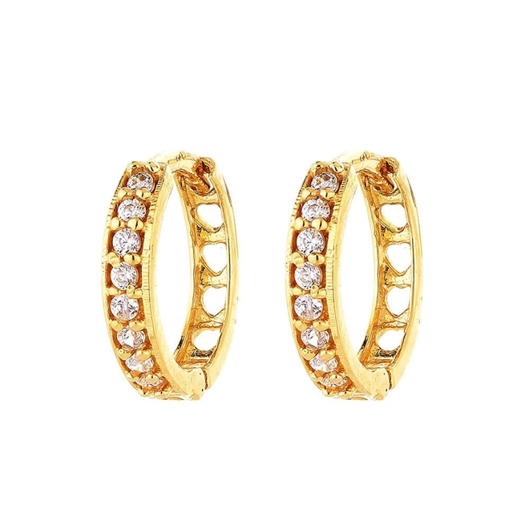

-
Anéis prata e ouro
R$300,00
-
Brincos prata e ouro
R$ 100,00
-
Colares prata e ouro
R$ 250,00
Coleções
Mais sobre nossos produtos
-
Anéis
Temos uma grande coleção de anéis para você poder comparar e adquirir aquele que seja realmente perfeito. O anel feminino é sempre um clássico. Com design marcante, nossos anéis em ouro trazem delicadeza e requinte, com muita qualidade e resistência
-
Brincos
Os brincos são joias essenciais que podem ser incorporadas em praticamente todos os looks. Entretanto para cada ocasião há um modelo de brinco certo para complementar a proposta de visual. Por isso, vamos te mostrar um guia dos tipos de brincos que termos em nossa loja e que compõem os porta joias modernos.
-
Colares
Antes de escolher os seus colares, a primeira dica é separar as roupas que serão usadas na produção. Isso porque para cada modelo de roupa existe um colar adequado. Iremos te mostrar nossos colares e te ajudar a escolher o que mais combina com você.